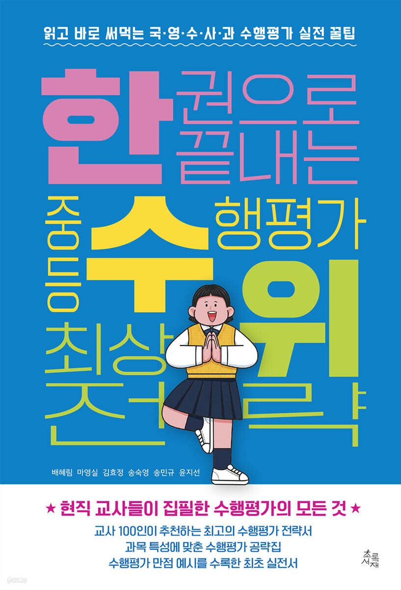

<!DOCTYPE html>
<html lang="ko">
<head>
    <meta charset="UTF-8">
    <meta name="viewport" content="width=device-width, initial-scale=1.0">
    <title>한수위 - 중등 수행평가 MBTI 진단 테스트</title>
    <!-- Tailwind CSS -->
    <script src="https://cdn.tailwindcss.com"></script>
    <!-- Google Fonts: Jua for titles, Noto Sans KR for highly readable body -->
    <link rel="preconnect" href="https://fonts.googleapis.com">
    <link rel="preconnect" href="https://fonts.gstatic.com" crossorigin>
    <link href="https://fonts.googleapis.com/css2?family=Jua&family=Noto+Sans+KR:wght@400;500;700;900&display=swap" rel="stylesheet">

    <style>
        body {
            font-family: 'Noto Sans KR', sans-serif;
            background: linear-gradient(135deg, #FFDEE9 0%, #B5FFFC 100%);
        }
        .font-retro-title {
            font-family: 'Jua', sans-serif;
        }
        .pixel-border {
            border: 3px solid #000000;
            box-shadow: 5px 5px 0px #000000;
        }
        .pixel-shadow {
            box-shadow: 4px 4px 0px #000000;
        }
        @keyframes bobbing {
            0%, 100% { transform: translateY(0); }
            50% { transform: translateY(-4px); }
        }
        .animate-bob {
            animation: bobbing 0.7s infinite;
        }
        @keyframes titleFloat {
            0%, 100% { transform: translateY(0) scale(1); }
            50% { transform: translateY(-3px) scale(1.02); }
        }
        .animate-title {
            animation: titleFloat 2s ease-in-out infinite;
        }
        ::-webkit-scrollbar {
            width: 6px;
        }
        ::-webkit-scrollbar-track {
            background: #f1f1f1;
            border-radius: 4px;
        }
        ::-webkit-scrollbar-thumb {
            background: #000;
            border-radius: 4px;
        }
    </style>
</head>
<body class="min-h-screen flex items-center justify-center p-3 md:p-6 text-gray-900">

    <!-- 다마고치 팩 게임기 프레임 정중앙 배치 -->
    <div id="app" class="w-full max-w-md bg-white pixel-border rounded-[32px] p-4 md:p-5 flex flex-col gap-3 md:gap-4 relative overflow-hidden my-auto">
        <!-- 자바스크립트가 여기에 화면을 렌더링합니다 -->
    </div>

    <script>
        let audioCtx = null;
        let isMuted = true;
        let bgmInterval = null;

        function initAudio() {
            if (!audioCtx) {
                audioCtx = new (window.AudioContext || window.webkitAudioContext)();
            }
        }

        function playSfx(freq, duration) {
            if (isMuted) return;
            initAudio();
            const osc = audioCtx.createOscillator();
            const gain = audioCtx.createGain();
            osc.type = 'square';
            osc.frequency.value = freq;
            gain.gain.setValueAtTime(0.04, audioCtx.currentTime);
            gain.gain.exponentialRampToValueAtTime(0.001, audioCtx.currentTime + duration);
            osc.connect(gain);
            gain.connect(audioCtx.destination);
            osc.start();
            osc.stop(audioCtx.currentTime + duration);
        }

        function startBgm() {
            if (bgmInterval) clearInterval(bgmInterval);
            initAudio();
            const notes = [261.63, 293.66, 329.63, 349.23, 392.00, 440.00, 493.88, 523.25];
            let step = 0;
            
            bgmInterval = setInterval(() => {
                if (isMuted) return;
                const melody = [0, 2, 4, 2, 5, 4, 7, 6, 4, 5, 3, 4, 2, 0, 1, 0];
                const note = notes[melody[step % melody.length]];
                
                const osc = audioCtx.createOscillator();
                const gain = audioCtx.createGain();
                osc.type = 'triangle';
                osc.frequency.value = note;
                gain.gain.setValueAtTime(0.015, audioCtx.currentTime);
                gain.gain.exponentialRampToValueAtTime(0.001, audioCtx.currentTime + 0.2);
                osc.connect(gain);
                gain.connect(audioCtx.destination);
                osc.start();
                osc.stop(audioCtx.currentTime + 0.2);
                
                step++;
            }, 260);
        }

        function toggleMute() {
            isMuted = !isMuted;
            if (!isMuted) {
                initAudio();
                startBgm();
                playSfx(523.25, 0.1);
            } else {
                if (bgmInterval) clearInterval(bgmInterval);
            }
            updateApp();
        }

        let userName = "체리토끼";
        let selectedAvatar = "cherry";
        let currentScreen = "welcome"; 
        let currentQ = 0;
        let selectedOptionIdx = null;
        let selectedOptionIdxs = Array(20).fill(null);

        let showPreviewModal = false;
        let toastMessage = "";

        const avatars = {
            cherry: { name: "체리", color: "#FF6B6B" },
            cookie: { name: "쿠키", color: "#4D96FF" },
            jadu: { name: "자두", color: "#FF8AAE" },
            melon: { name: "멜론", color: "#6BCB77" },
            mango: { name: "망고", color: "#FFD93D" }
        };

        function renderPixelAvatar(type, isAnimated = false) {
            const a = avatars[type] || avatars.cherry;
            const animClass = isAnimated ? 'animate-bob' : '';
            return `
                <svg viewBox="0 0 160 160" class="w-16 h-16 ${animClass}" style="filter: drop-shadow(3px 3px 0px rgba(0,0,0,0.15));">
                    <g>
                        <rect x="40" y="48" width="80" height="64" fill="#FFE0BD" />
                        <rect x="44" y="88" width="16" height="8" fill="#FF8D9F" />
                        <rect x="100" y="88" width="16" height="8" fill="#FF8D9F" />
                        <rect x="48" y="68" width="16" height="20" fill="#1E1E1E" />
                        <rect x="52" y="72" width="8" height="8" fill="#FFFFFF" />
                        <rect x="96" y="68" width="16" height="20" fill="#1E1E1E" />
                        <rect x="100" y="72" width="8" height="8" fill="#FFFFFF" />
                        <rect x="72" y="92" width="4" height="4" fill="#1E1E1E" />
                        <rect x="84" y="92" width="4" height="4" fill="#1E1E1E" />
                        <rect x="76" y="96" width="8" height="4" fill="#1E1E1E" />
                        <rect x="32" y="112" width="12" height="12" fill="#FFE0BD" />
                        <rect x="116" y="112" width="12" height="12" fill="#FFE0BD" />
                        <rect x="52" y="136" width="16" height="12" fill="#1E1E1E" />
                        <rect x="92" y="136" width="16" height="12" fill="#1E1E1E" />

                        ${type === 'cherry' ? `
                            <rect x="32" y="40" width="96" height="12" fill="#4E3629" />
                            <rect x="24" y="48" width="16" height="40" fill="#4E3629" />
                            <rect x="120" y="48" width="16" height="40" fill="#4E3629" />
                            <rect x="32" y="24" width="96" height="20" fill="#FF2E2E" />
                            <rect x="20" y="36" width="120" height="8" fill="#D61C1C" />
                            <rect x="72" y="16" width="16" height="8" fill="#FFFFFF" />
                            <rect x="44" y="112" width="72" height="24" fill="#FF2E2E" />
                            <rect x="52" y="112" width="8" height="24" fill="#FFFFFF" />
                            <rect x="100" y="112" width="8" height="24" fill="#FFFFFF" />
                        ` : ''}
                        ${type === 'cookie' ? `
                            <rect x="32" y="40" width="96" height="12" fill="#F4D068" />
                            <rect x="32" y="52" width="8" height="48" fill="#F4D068" />
                            <rect x="120" y="52" width="8" height="48" fill="#F4D068" />
                            <rect x="36" y="24" width="88" height="20" fill="#FFD13B" />
                            <rect x="76" y="16" width="8" height="24" fill="#00B050" />
                            <rect x="68" y="24" width="24" height="8" fill="#00B050" />
                            <rect x="40" y="64" width="80" height="16" fill="#00E5FF" opacity="0.5" />
                            <rect x="36" y="68" width="4" height="8" fill="#1E1E1E" />
                            <rect x="120" y="68" width="4" height="8" fill="#1E1E1E" />
                            <rect x="44" y="112" width="72" height="24" fill="#0D47A1" />
                        ` : ''}
                        ${type === 'jadu' ? `
                            <rect x="28" y="40" width="104" height="12" fill="#5D4037" />
                            <rect x="24" y="52" width="12" height="48" fill="#5D4037" />
                            <rect x="124" y="52" width="12" height="48" fill="#5D4037" />
                            <rect x="40" y="20" width="80" height="24" fill="#2E2E2E" />
                            <rect x="32" y="36" width="96" height="12" fill="#1C1C1C" />
                            <rect x="44" y="64" width="28" height="24" fill="none" stroke="#1E1E1E" stroke-width="4" />
                            <rect x="88" y="64" width="28" height="24" fill="none" stroke="#1E1E1E" stroke-width="4" />
                            <rect x="72" y="72" width="16" height="4" fill="#1E1E1E" />
                            <rect x="44" y="112" width="72" height="24" fill="#F48FB1" />
                            <rect x="124" y="100" width="12" height="20" fill="#FFC107" />
                            <rect x="128" y="92" width="4" height="8" fill="#E0F7FA" />
                        ` : ''}
                        ${type === 'melon' ? `
                            <rect x="32" y="40" width="96" height="12" fill="#4CAF50" />
                            <rect x="32" y="52" width="12" height="40" fill="#4CAF50" />
                            <rect x="116" y="52" width="12" height="40" fill="#4CAF50" />
                            <rect x="44" y="32" width="72" height="16" fill="#81C784" />
                            <rect x="44" y="112" width="72" height="24" fill="#4CAF50" />
                            <rect x="72" y="112" width="16" height="16" fill="#E8F5E9" />
                        ` : ''}
                        ${type === 'mango' ? `
                            <rect x="32" y="24" width="96" height="28" fill="#7E57C2" />
                            <rect x="40" y="16" width="80" height="12" fill="#7E57C2" />
                            <rect x="48" y="8" width="64" height="12" fill="#7E57C2" />
                            <rect x="24" y="44" width="16" height="64" fill="#7E57C2" />
                            <rect x="120" y="44" width="16" height="64" fill="#7E57C2" />
                            <rect x="32" y="44" width="8" height="8" fill="#FFEB3B" />
                            <rect x="120" y="44" width="8" height="8" fill="#FFEB3B" />
                            <rect x="44" y="112" width="72" height="24" fill="#FF4081" />
                            <rect x="124" y="100" width="4" height="28" fill="#FFB74D" />
                            <rect x="120" y="92" width="12" height="12" fill="#FFEB3B" />
                        ` : ''}
                    </g>
                </svg>
            `;
        }

        const questions = [
            { 
                id: 1, type: "PI", text: "국어 시간에 '한 달 동안 독서를 하고 감상문을 작성해서 제출하라'는 과제를 안내받았다면, 나의 독서 스타일은?",
                options: [
                    { text: "첫 주에 읽을 분량과 기록 작성 일정을 완벽히 달력에 나누어 적어두고 지킨다.", score: { P: 2 } },
                    { text: "대략 일주일 단위로 얼만큼 읽을지 머릿속으로 어렴풋이 선을 긋고 시작한다.", score: { P: 1 } },
                    { text: "책이 재미있어지거나 영감이 떠오르는 날에 몰아서 많이 읽고 기록한다.", score: { I: 1 } },
                    { text: "제출 기한이 임박했을 때 며칠 밤을 집중해서 스릴 있게 한 번에 채워 나간다.", score: { I: 2 } }
                ]
            },
            { 
                id: 2, type: "OL", text: "국어 수행평가로 '나를 바꾼 한 편의 시'라는 주제로 감상문을 쓸 때, 내가 더 공들이는 부분은?",
                options: [
                    { text: "교과서에서 배운 문학적 상징과 서사 구조 분석을 완벽한 논리로 풀어내는 데 집중한다.", score: { L: 2 } },
                    { text: "남들이 잘 쓰지 않는 참신하고 독특한 작품을 선정하여 나만의 개성 있는 시각을 담는다.", score: { O: 2 } },
                    { text: "문장의 형식이나 정석적인 흐름보다는, 작품을 읽으며 느낀 솔직하고 창의적인 감성을 기술한다.", score: { O: 1 } },
                    { text: "맞춤법, 원고지 작성법 등 감점 요인을 철저히 점검하고 서론-본론-결론의 정석적인 구조를 맞춘다.", score: { L: 1 } }
                ]
            },
            { 
                id: 3, type: "CS", text: "국어 모둠 수행평가로 '시사 이슈 토론'을 시작했다. 내가 선호하는 단톡방 소통 방식은?",
                options: [
                    { text: "처음부터 끝까지 실시간으로 의견을 공유하며, 작은 결정 하나도 모둠원 전체의 합의를 거친다.", score: { C: 2 } },
                    { text: "큰 틀의 주제만 같이 정한 뒤, 각자 맡은 하위 논거들을 취합할 때 위주로 대화한다.", score: { C: 1 } },
                    { text: "모둠원들과 가볍게 의견을 조율하되, 내가 맡은 파트의 논리는 내가 독자적으로 완성하고 싶다.", score: { S: 1 } },
                    { text: "단톡방에서 감정 소모나 긴 대화를 하기보다는, 처음부터 각자 역할을 명확히 쪼개고 터치하지 않는다.", score: { S: 2 } }
                ]
            },
            { 
                id: 4, type: "OL", text: "국어 수행평가 주제가 '문학 작품의 재구성'이라고 명시되었다면, 과제를 받아든 나의 반응은?",
                options: [
                    { text: "가이드라인이 명확하지 않아 오히려 무엇을 먼저 시작해야 할지 갈팡질팡한다.", score: { L: 2 } },
                    { text: "예시 양식이 몇 개 있으면 좋겠다고 생각하며 기존 성공 사례를 찾아본다.", score: { L: 1 } },
                    { text: "내 마음대로 상상력을 펼칠 수 있는 기회라며 신나서 아이디어를 구상한다.", score: { O: 1 } },
                    { text: "아무도 시도하지 않은 파격적이고 유니크한 포맷을 먼저 고민하며 즐거워한다.", score: { O: 2 } }
                ]
            },
            { 
                id: 5, type: "PI", text: "영어 말하기 수행평가 대본 제출일이 일주일 남았다. 나의 준비 스타일은?",
                options: [
                    { text: "오늘 바로 초안을 쓰고, 매일 문장을 조금씩 다듬으며 완벽하게 외울 때까지 반복 연습한다.", score: { P: 2 } },
                    { text: "이틀 정도 자료 모은 뒤 삼일째 되는 날 대본 완성하고 여유롭게 연습한다.", score: { P: 1 } },
                    { text: "마감 이틀 전쯤 한 번에 집중해서 대본 작성하고 직전에 빠르게 암기한다.", score: { I: 1 } },
                    { text: "전날 밤이나 당일 새벽에 초인적인 집중력을 발휘해 대본을 쓰고 즉석 임기응변으로 발표한다.", score: { I: 2 } }
                ]
            },
            { 
                id: 6, type: "OL", text: "영어 에세이 쓰기 수행평가에서 더 높은 점수를 받기 위한 나의 필승 전략은?",
                options: [
                    { text: "교과서에 나온 핵심 영문법과 필수 어휘를 조목조목 엮어서 감점 없는 문장을 구사한다.", score: { L: 2 } },
                    { text: "문법이 조금 서툴더라도 내가 전달하고자 하는 메시지의 깊이와 참신함에 승부를 건다.", score: { O: 2 } },
                    { text: "남들이 쓰는 뻔한 서론 대신 감성적이거나 은유적인 표현을 도입부에 적극 활용한다.", score: { O: 1 } },
                    { text: "채점 기준표를 꼼꼼히 분석하여 요구하는 문장 개수와 형식을 칼같이 맞춘다.", score: { L: 1 } }
                ]
            },
            { 
                id: 7, type: "CS", text: "영어 모둠 발표를 위해 역할을 나누어야 한다. 내가 가장 자원하고 싶은 역할은?",
                options: [
                    { text: "조원들의 대본을 하나로 매끄럽게 합치고 PPT 디자인을 전체적으로 조율하는 중재자 역할", score: { C: 2 } },
                    { text: "발표의 메인 서론과 결론의 흐름을 잡고, 조원들이 놓친 부분을 뒤에서 챙겨주는 서포터 역할", score: { C: 1 } },
                    { text: "내가 조사한 영문 자료의 퀄리티를 극상으로 올려서 우리 조의 점수 뼈대를 세우는 역할", score: { S: 1 } },
                    { text: "남들의 간섭 없이 내 발표 파트의 영작과 암기만 완벽하게 책임지고 끝내는 역할", score: { S: 2 } }
                ]
            },
            { 
                id: 8, type: "CS", text: "선생님이 학기말 영어 수행평가 피드백을 주셨을 때, 내가 가장 듣고 싶은 말은?",
                options: [
                    { text: "모둠 활동에서 뛰어난 친화력과 배려심으로 소외되는 친구 없이 조를 훌륭하게 이끌었음.", score: { C: 2 } },
                    { text: "타인의 의견을 경청할 줄 알며, 협동 과제에서 소통의 중심축 역할을 성실히 수행함.", score: { C: 1 } },
                    { text: "스스로 지식을 탐구하고 문제를 해결하는 독립적인 성취도가 매우 탁월함.", score: { S: 1 } },
                    { text: "자기 주도적 학습 능력이 우수하며, 본인의 과제에 대해 깊이 있고 책임감 있게 완수함.", score: { S: 2 } }
                ]
            },
            { 
                id: 9, type: "OL", text: "수학 수행평가로 '실생활 속 수학 개념 찾기 보고서' 과제가 나왔다. 주제를 선정하는 나의 방식은?",
                options: [
                    { text: "교과서 뒤쪽에 나오는 정석적인 예시나 선생님이 추천해 준 안전한 범주 안에서 고른다.", score: { L: 2 } },
                    { text: "기존 만점 선배들의 보고서나 인터넷의 공인된 우수 사례의 논리 구조를 참고한다.", score: { L: 1 } },
                    { text: "수학과 전혀 관련 없어 보이는 참신한 분야(예: 대중음악, 패션)에서 수학적 원리를 엮어본다.", score: { O: 1 } },
                    { text: "내 관심사와 완벽히 일치하는 독창적이고 신박한 주제를 제로 베이스에서 새로 개척한다.", score: { O: 2 } }
                ]
            },
            { 
                id: 10, type: "CS", text: "수학 통계 과제를 해결하기 위해 모둠원들과 데이터를 수집해야 한다. 작업 과정에서 나의 성향은?",
                options: [
                    { text: "다 같이 모여서 설문조사 문항을 하나하나 같이 읽어보며 다수결로 최종 수정을 거친다.", score: { C: 2 } },
                    { text: "대략적인 방향을 정하고, 단톡방에서 의견이 분분할 때 부드럽게 타협점을 찾아낸다.", score: { C: 1 } },
                    { text: "각자 조사 구역을 칼같이 나누고, 취합할 때 만나서 조사한 자료를 합치는 게 효율적이라 본다.", score: { S: 1 } },
                    { text: "남들이 데이터를 엉성하게 모을까 봐 걱정되므로, 내 파트만큼은 완벽한 무결점 데이터를 혼자 독립적으로 뽑아낸다.", score: { S: 2 } }
                ]
            },
            { 
                id: 11, type: "OL", text: "수학 구술 수행평가(풀이 과정 설명하기)를 준비할 때, 내가 중점을 두는 방향은?",
                options: [
                    { text: "연산 기호와 공식을 한 줄도 빠뜨리지 않고 교과서 정석대로 차근차근 증명하는 전개", score: { L: 2 } },
                    { text: "감점 요인이 없도록 풀이 조건의 함정들과 오답 유발 근거를 논리정연하게 짚어내는 전개", score: { L: 1 } },
                    { text: "비유나 시각 자료를 활용해 친구들이 이해하기 쉽게 발표하는 방식", score: { O: 1 } },
                    { text: "가르쳐주지 않은 고난도 개념이나 우회 경로를 써서 독창적으로 풀어내는 방식", score: { O: 2 } }
                ]
            },
            { 
                id: 12, type: "PI", text: "수학 수행평가 문제를 풀다가 아무리 계산해도 중간에 풀이 과정이 막혔을 때, 나의 행동은?",
                options: [
                    { text: "풀이를 멈추고 위에서부터 검산하며 조건 중 내가 빠뜨리거나 잘못 적용한 규칙이 없는지 순서대로 역추적한다.", score: { P: 2 } },
                    { text: "일단 다른 문항들부터 빠르게 풀어 점수를 확보해 두고, 남은 시간에 막힌 문제를 풀 수 있도록 시간 배분을 조정한다.", score: { P: 1 } },
                    { text: "계속 붙잡고 있으면 머리가 안 돌아가니 잠시 쉬거나 다른 과목을 하다가, 새로운 직관이 떠오를 때 다시 도전한다.", score: { I: 1 } },
                    { text: "한참 고민해도 안 풀리던 문제가 마감 직전이나 시험지 제출 5분 전에 번뜩이며 풀리는 스릴을 자주 경험한다.", score: { I: 2 } }
                ]
            },
            { 
                id: 13, type: "OL", text: "사회 시간에 '우리 지역의 환경 문제 해결을 위한 제안서' 작성을 시작했다. 나의 첫 단계 행동은?",
                options: [
                    { text: "관련 예산 법령, 통계청 데이터 등 공신력 있는 수치 자료를 수집해 논리의 뼈대를 세운다.", score: { L: 2 } },
                    { text: "기존 성공 사례 보고서들의 서론-본론-결론 흐름을 분석하여 안정적인 양식을 먼저 만든다.", score: { L: 1 } },
                    { text: "현장 인터뷰나 브레인스토밍을 통해 주민들이 유쾌하게 참여할 수 있는 톡톡 튀는 아이디어를 낸다.", score: { O: 1 } },
                    { text: "문제의 본질을 꿰뚫는 나만의 독창적인 시각과 날카로운 비판적 에세이 형태의 서두를 구상한다.", score: { O: 2 } }
                ]
            },
            { 
                id: 14, type: "CS", text: "사회 모둠 과제로 '역사 카드뉴스 제작'을 한다. 역할을 나눌 때 내가 일하는 방식은?",
                options: [
                    { text: "기획부터 디자인 톤앤매너 설정까지 모둠원 모두가 만족할 때까지 끝장 토론을 거쳐 결정한다.", score: { C: 2 } },
                    { text: "다수의 의견을 따르되, 갈등이 생기면 서로 서운하지 않게 조율하는 비공식 리더 역할을 한다.", score: { C: 1 } },
                    { text: "전체적인 피드백만 공유하고, 각자 맡은 연도별 카드뉴스는 자기 개성대로 만들어서 합친다.", score: { S: 1 } },
                    { text: "조원들과 엮여서 마찰이 생기는 것보다, 아예 단독 페이지 서너 장을 통째로 넘겨받아 혼자 전담한다.", score: { S: 2 } }
                ]
            },
            { 
                id: 15, type: "CS", text: "모둠으로 수행평가 과제를 완성했는데, 제출 직전 다시 확인하니 미처 반영하지 못한 빠진 내용을 발견했을 때 나의 반응은?",
                options: [
                    { text: "시간이 걸리더라도 모둠원들을 다시 소집해 분량을 재배치하고 완벽하게 채워 넣자고 제안한다.", score: { C: 2 } },
                    { text: "현재 완성도도 나쁘지 않으니 감점되지 않을 선에서 빠진 키워드만 빠르게 중간에 덧붙인다.", score: { C: 1 } },
                    { text: "전체 흐름을 해치지 않는다면 그대로 제출하고, 혹시 감점이 되더라도 다음 과제에서 만회하자고 다독인다.", score: { S: 1 } },
                    { text: "조원들에게 알리고 동의를 구하는 절차를 기다리기보다, 마감 전에 내가 빠르게 그 부분만 혼자 보완해서 수정본을 올린다.", score: { S: 2 } }
                ]
            },
            { 
                id: 16, type: "CS", text: "사회 모둠 과제를 완성하고 난 뒤 드는 생각은?",
                options: [
                    { text: "모둠원들과 치열하게 의견을 나누고 협동하면서 지식을 확장해 나간 과정 자체가 뜻깊다.", score: { C: 2 } },
                    { text: "혼자 할 때보다 다 같이 머리를 맞추어 시너지 효과를 낸 것에 보람을 느낀다.", score: { C: 1 } },
                    { text: "협동 과제도 좋지만, 내 개인의 기여도와 성과가 명확하게 인정받는 것이 더 중요하다.", score: { S: 1 } },
                    { text: "타인의 간섭 없이 온전히 내 역량만으로 정당하게 평가받는 개인 과제가 마음 편하다.", score: { S: 2 } }
                ]
            },
            { 
                id: 17, type: "CS", text: "과학 실험 수행평가 도중, 우리 조의 데이터가 자꾸 예상된 이론값과 다르게 나와 꼬이고 있다면?",
                options: [
                    { text: "조원들의 불안한 멘탈을 챙겨주며 실험 방법의 오류를 다 같이 처음부터 다시 찾아본다.", score: { C: 2 } },
                    { text: "분위기가 가라앉지 않도록 격려하며, 일단 나온 데이터라도 잘 정리해서 결론을 내자고 다독인다.", score: { C: 1 } },
                    { text: "시간이 부족하니 조원들에게 양해를 구하고, 문제 있는 파트의 계산을 내가 주도적으로 수정한다.", score: { S: 1 } },
                    { text: "조원들과의 대화는 최소화하고, 나만의 독립적인 검증 방식으로 오차의 원인을 명확히 찾아내 제출한다.", score: { S: 2 } }
                ]
            },
            { 
                id: 18, type: "PI", text: "과학 보고서의 '가설 설정 및 변인 통제 계획'을 작성할 때 나의 스타일은?",
                options: [
                    { text: "실험 요일, 시간, 온도, 도구의 오차 범위까지 완벽하게 타임라인별로 세팅해야 안심이 된다.", score: { P: 2 } },
                    { text: "대략적인 실험 순서와 주의사항을 머릿속으로 시뮬레이션해 본 뒤 가볍게 정리해 둔다.", score: { P: 1 } },
                    { text: "실험을 직접 진행하면서 부딪히는 변수들을 실시간으로 유연하게 수정하는 편이 낫다.", score: { I: 1 } },
                    { text: "철저한 계획보다는 실험 당일 현장의 감각과 뛰어난 임기응변으로 결괏값을 도출한다.", score: { I: 2 } }
                ]
            },
            { 
                id: 19, type: "OL", text: "과학 수행평가로 '발명품 만들기' 과제를 받았다면, 아이디어를 구상하는 나의 스타일은?",
                options: [
                    { text: "과학적 원리와 수치를 정확한 스케일과 완벽한 설계도로 구현한 실용적인 물건을 구상한다.", score: { L: 2 } },
                    { text: "교과서 및 특허 가이드에 나온 성공적인 기본 우수 모델을 충실히 참고하여 모범적인 결과물을 설계한다.", score: { L: 1 } },
                    { text: "일상 속 재활용품이나 특이한 소품들을 무작위로 결합해 보며 직관적으로 작동하는 참신한 물건을 만든다.", score: { O: 1 } },
                    { text: "고정관념을 완전히 깨부수고 미적 감각이나 예술성을 곁들인 나만의 독창적인 발명품 비주얼을 설계한다.", score: { O: 2 } }
                ]
            },
            { 
                id: 20, type: "PI", text: "과학 탐구 수행평가 기간이 3주간 주어졌을 때, 나의 전형적인 모습은?",
                options: [
                    { text: "1주 차 주제 선정, 2주 차 실험, 3주 차 작성 및 제출이라는 눈에 보이는 3단계 주간 분할 계획을 칼같이 실천한다.", score: { P: 2 } },
                    { text: "매주 주말마다 어느 정도 진전이 있었는지 스스로 중간 점검을 하며 유연하게 진행한다.", score: { P: 1 } },
                    { text: "마감 전 주말까지는 여유롭게 구상만 하다가, 마지막 3일 동안 폭발적인 에너지를 쏟아 완성한다.", score: { I: 1 } },
                    { text: "마감 전날 밤샘 작업을 할 때 가장 완벽한 몰입도와 번뜩이는 결과물이 나온다고 믿는다.", score: { I: 2 } }
                ]
            }
        ];

        const archetypeMap = {
            "POC": {
                name: "#우주최강_하드캐리_단장님",
                desc: "체계적인 계획과 통통 튀는 아이디어, 뛰어난 친화력으로 수행평가 모둠 과제에서 항상 최상의 결과를 이끄는 만능 리더형입니다.",
                cheatTitle: "『한수위』: 모둠 과제 완벽 기여도 증명법",
                cheatDesc: "자신만의 통찰력과 리더십을 평가 기준표에 맞춰 교사에게 명확히 전달하고 반영시키는 필승법 수록!",
                bestMatch: "ILS (은둔형 실속파 자료조사관)",
                bestMatchDesc: "탄탄한 논리로 단장님의 창의적 기획을 받쳐주는 찰떡 조력자!"
            },
            "POS": {
                name: "#아이디어_독주자_연출가",
                desc: "자신만의 철저한 타임라인 안에서 유니크한 시각과 창의적 기획력을 발휘하여 혼자서도 완벽한 고퀄리티 결과물을 뽑아냅니다.",
                cheatTitle: "『한수위』: 개인 과제 창의·융합 문장 표현 공식",
                cheatDesc: "성취기준에 맞춘 고난도 평가 기준을 단숨에 채우는 고급 서술 문장 틀 선사!",
                bestMatch: "PLC (체계적 전략가 모둠장)",
                bestMatchDesc: "내 상상력을 현실적인 발표 양식으로 딱 다듬어주는 전략가 친구!"
            },
            "PLC": {
                name: "#체계적_전략가_모둠장",
                desc: "철두철미한 계획과 정석적인 논리력, 완벽한 소통 능력을 바탕으로 모둠원 전체가 만점을 받도록 안정적으로 지휘하는 이성파 리더입니다.",
                cheatTitle: "『한수위』: 평가 기준표 분석 및 감점 제로 체크리스트",
                cheatDesc: "선생님이 제시한 요구사항을 100% 충족시키는 칼같은 감점 방어 가이드!",
                bestMatch: "IOS (번뜩이는 독립 아티스트)",
                bestMatchDesc: "자칫 평범해질 수 있는 논리적 과제에 파격적인 시각을 더해주는 창의파 친구!"
            },
            "POL": {
                name: "#갓벽주의_방구석_독재자",
                desc: "철두철미한 계획과 완벽한 논리력으로 수행평가의 모든 감점 요인을 사전에 차단하고 전과목 A+를 받아내는 완벽주의자입니다.",
                cheatTitle: "『한수위』: 10분 감점 방지 체크리스트",
                cheatDesc: "완벽주의자가 흔히 범하는 사소한 원고지/출처 표기 감점 요인을 칼같이 짚어내는 체크리스트 제공!",
                bestMatch: "IOC (아이디어 뿜뿜 분위기메이커)",
                bestMatchDesc: "자칫 딱딱해질 수 있는 내 과제에 유쾌한 영감을 주는 창의왕 친구!"
            },
            "PLS": {
                name: "#무결점_솔로_아키텍트",
                desc: "남에게 의지하기보다는 스스로 정석적인 규칙과 논리를 적용해 치밀하고 완벽한 오류 제로 보고서를 완성하는 탐구파입니다.",
                cheatTitle: "『한수위』: 탐구 보고서 학술적 논리 구조화",
                cheatDesc: "통계 자료와 법령, 학술 근거를 활용하여 교사가 탄복하는 수준 높은 결론을 이끌어내는 프레임 제시!",
                bestMatch: "IOC (아이디어 뿜뿜 분위기메이커)",
                bestMatchDesc: "나에게 없는 무대 발표력과 분위기 환기로 완벽 시너지를 내는 친구!"
            },
            "IOC": {
                name: "#아이디어_뿜뿜_분위기메이커",
                desc: "순발력 있는 직관과 톡톡 튀는 아이디어로 모둠원들의 사기를 올리고 즐겁게 과제를 해결하는 센스만점 분위기 리더입니다.",
                cheatTitle: "『한수위』: 즉흥적 아이디어를 정형화하는 만능 템플릿",
                cheatDesc: "머릿속에 번뜩인 아이디어를 5분 만에 서론-본론-결론 4단계 수행평가 양식으로 바꾸는 구조표 탑재!",
                bestMatch: "PLS (무결점 솔로 아키텍트)",
                bestMatchDesc: "내 톡톡 튀는 아이디어를 만점짜리 논리 글로 정리해주는 실속파 친구!"
            },
            "ILC": {
                name: "#스파크_해결사_조율왕",
                desc: "위기 순간에 초인적인 임기응변과 논리적 순발력을 발휘하여 모둠 내 갈등을 해결하고 직전에 승리를 거머쥐는 해결사입니다.",
                cheatTitle: "『한수위』: 마감 직전 역전하는 벼락치기 검수법",
                cheatDesc: "시간이 부족할 때 꼭 챙겨야 하는 평가 기준 핵심 키워드 3가지 집중 공략법 전수!",
                bestMatch: "POS (아이디어 독주자 연출가)",
                bestMatchDesc: "막판 몰입으로 엄청난 퀄리티의 결과물을 함께 완성하는 환상의 콤비!"
            },
            "IOS": {
                name: "#번뜩이는_독립_아티스트",
                desc: "남들의 고정관념을 파괴하는 창의적 시각을 바탕으로 혼자서 몰입할 때 가장 파격적이고 유니크한 과제물을 선보입니다.",
                cheatTitle: "『한수위』: 독창적 시각을 채점 기준에 맞추는 법",
                cheatDesc: "파격적인 아이디어가 감점 요인이 되지 않도록 교과서 성취기준과 안전하게 매칭하는 스킬 수록!",
                bestMatch: "POL (갓벽주의 방구석 독재자)",
                bestMatchDesc: "내 아티스트적 감성에 완벽한 규격 포맷을 씌워주는 감점 방어막 친구!"
            },
            "ILS": {
                name: "#은둔형_실속파_자료조사관",
                desc: "화려함보다는 묵묵하고 성실한 팩트 체크와 깊이 있는 탐구력으로 수행평가 점수의 묵직한 하드캐리 뼈대를 제공합니다.",
                cheatTitle: "『한수위』: 팩트 중심 조사 자료를 평가서 문장으로 환산하기",
                cheatDesc: "자료조사 노력이 자기주도적 탐구 역량으로 매끄럽게 서술되도록 돕는 전환 가이드!",
                bestMatch: "POC (우주최강 하드캐리 단장님)",
                bestMatchDesc: "내가 모은 보석 같은 자료를 스포트라이트 받게 해주는 명품 연출가 단장님!"
            }
        };

        function calculateFinalScores() {
            let finalScores = { P: 0, I: 0, O: 0, L: 0, C: 0, S: 0 };
            for (let i = 0; i < questions.length; i++) {
                const selectedIdx = selectedOptionIdxs[i];
                if (selectedIdx !== null) {
                    const opt = questions[i].options[selectedIdx];
                    if (opt && opt.score) {
                        Object.keys(opt.score).forEach(key => {
                            finalScores[key] += opt.score[key];
                        });
                    }
                }
            }
            return finalScores;
        }

        function copyShareLink() {
            const url = window.location.href;
            if (navigator.share) {
                navigator.share({
                    title: '한수위 - 중등 수행평가 MBTI 진단 테스트',
                    text: '나의 수행평가 본캐 유형을 확인해보세요!',
                    url: url
                }).catch(() => {
                    fallbackCopyUrl(url);
                });
            } else {
                fallbackCopyUrl(url);
            }
        }

        function fallbackCopyUrl(url) {
            if (navigator.clipboard && navigator.clipboard.writeText) {
                navigator.clipboard.writeText(url).then(() => {
                    showToast("🔗 테스트 링크가 복사되었습니다! 친구들에게 공유해보세요!");
                }).catch(() => {
                    legacyCopyUrl(url);
                });
            } else {
                legacyCopyUrl(url);
            }
            playSfx(880.00, 0.1);
        }

        function legacyCopyUrl(url) {
            const input = document.createElement('input');
            input.value = url;
            document.body.appendChild(input);
            input.select();
            document.execCommand('copy');
            document.body.removeChild(input);
            showToast("🔗 테스트 링크가 복사되었습니다!");
        }

        function showToast(msg) {
            toastMessage = msg;
            updateApp();
            setTimeout(() => {
                toastMessage = "";
                updateApp();
            }, 3000);
        }

        function handleImgError(img) {
            if (!img.dataset.tryCount) img.dataset.tryCount = "1";
            const count = parseInt(img.dataset.tryCount);
            
            if (count === 1) {
                img.dataset.tryCount = "2";
                img.src = "11111.jpg";
            } else if (count === 2) {
                img.dataset.tryCount = "3";
                img.src = "11111.png";
            } else if (count === 3) {
                img.dataset.tryCount = "4";
                img.src = "11111.JPEG";
            } else {
                img.src = "https://image.yes24.com/goods/194634602/L";
            }
        }

        function updateApp() {
            const app = document.getElementById('app');
            const audioBtnText = isMuted ? "🎵 BGM OFF" : "🔊 BGM ON";
            const audioBtnColor = isMuted ? "bg-gray-200" : "bg-[#7FFF00]";

            const toastHtml = toastMessage ? `
                <div class="fixed top-4 left-1/2 transform -translate-x-1/2 z-50 bg-black text-white text-base md:text-lg font-bold px-4 py-2.5 rounded-xl pixel-border shadow-2xl animate-bounce text-center max-w-xs">
                    ${toastMessage}
                </div>
            ` : '';

            // 1) WELCOME SCREEN
            if (currentScreen === "welcome") {
                app.innerHTML = `
                    ${toastHtml}
                    <div class="flex justify-between items-center w-full">
                        <div class="bg-[#FFC0CB] text-black text-xs md:text-sm font-bold py-1 px-3 rounded-full pixel-border">
                            🎒 중등 수행평가 완벽 가이드
                        </div>
                        <button onclick="toggleMute()" class="${audioBtnColor} text-black text-xs font-bold py-1 px-2.5 rounded-md pixel-border cursor-pointer transition-all shrink-0">
                            ${audioBtnText}
                        </button>
                    </div>

                    <!-- 따옴표 완전 삭제된 안내 문구 -->
                    <div class="bg-amber-100 border-2 border-black rounded-xl p-2.5 text-center text-xs md:text-sm font-bold text-amber-950 shadow-[2px_2px_0px_#000]">
                        👨‍👩‍👧‍👦 수행평가 성향을 진단하고 솔루션을 제공합니다
                    </div>
                    
                    <h1 class="font-retro-title text-4xl md:text-5xl font-bold text-center text-[#7FFF00] tracking-wider my-0.5 select-none animate-title" style="-webkit-text-stroke: 2px #000; filter: drop-shadow(3px 3px 0px #000);">
                        한수위
                    </h1>

                    <!-- 파란색 상자 제거 후 정중앙 배치된 한수위 책 표지 -->
                    <div class="flex justify-center my-1">
                        
                    </div>

                    <!-- 닉네임 입력 -->
                    <div class="flex flex-col gap-1">
                        <label class="text-xs md:text-sm font-bold text-black flex items-center gap-1">🌟 네 닉네임을 적어줘!</label>
                        <input type="text" id="nameInput" value="${userName}"
                               onfocus="if(this.value === '체리토끼') { this.value = ''; }"
                               onblur="if(this.value.trim() === '') { this.value = '체리토끼'; } userName = this.value;"
                               oninput="userName = this.value;"
                               class="w-full bg-[#FFFDE7] p-2.5 text-sm md:text-base font-bold rounded-xl pixel-border focus:outline-none" placeholder="닉네임 입력...">
                    </div>

                    <!-- 아바타 선택 -->
                    <div class="flex flex-col gap-1">
                        <label class="text-xs md:text-sm font-bold text-black">🐰 나와 가장 닮은 아바타 선택</label>
                        <div class="grid grid-cols-5 gap-1.5 pt-0.5">
                            ${Object.keys(avatars).map(key => `
                                <button onclick="setAvatar('${key}')" class="flex flex-col items-center p-1 rounded-xl border-2 ${selectedAvatar === key ? 'border-black bg-[#FFFDE7] pixel-shadow font-bold scale-105' : 'border-gray-100 bg-gray-50 opacity-60'} transition-all cursor-pointer">
                                    ${renderPixelAvatar(key, selectedAvatar === key)}
                                    <span class="text-xs mt-1 font-bold">${avatars[key].name}</span>
                                </button>
                            `).join('')}
                        </div>
                    </div>

                    <button onclick="startTest()" class="w-full mt-1 bg-[#7FFF00] hover:bg-yellow-300 text-black text-lg md:text-xl font-bold p-3 rounded-2xl pixel-border transition-all transform active:scale-95 cursor-pointer shadow-[4px_4px_0px_#000]">
                        진단 테스트 시작하기! 🚀
                    </button>
                `;
            } 
            
            // 2) GAME SCREEN
            else if (currentScreen === "game") {
                const q = questions[currentQ];
                const progress = Math.round(((currentQ) / questions.length) * 100);
                selectedOptionIdx = selectedOptionIdxs[currentQ];

                const optionsConfigs = [
                    { base: "bg-[#FFF0F0] hover:bg-[#FFD2D2]", badge: "bg-[#FF6B6B]", label: "A" },
                    { base: "bg-[#FFF9E6] hover:bg-[#FFE0B2]", badge: "bg-[#FFB74D]", label: "B" },
                    { base: "bg-[#EBF9EB] hover:bg-[#C8E6C9]", badge: "bg-[#4CAF50]", label: "C" },
                    { base: "bg-[#E6F4FF] hover:bg-[#BBDEFB]", badge: "bg-[#2196F3]", label: "D" }
                ];

                app.innerHTML = `
                    ${toastHtml}
                    <div class="flex justify-between items-center w-full text-sm md:text-base font-bold text-black">
                        <span>🕹️ 진단 진행률 (${currentQ + 1} / ${questions.length})</span>
                        <button onclick="toggleMute()" class="${audioBtnColor} text-black text-xs font-bold py-1 px-2.5 rounded-md pixel-border cursor-pointer shrink-0">
                            ${audioBtnText}
                        </button>
                    </div>
                    
                    <div class="w-full h-3.5 bg-gray-100 rounded-full pixel-border p-0.5 overflow-hidden">
                        <div class="h-full bg-[#7FFF00] transition-all duration-300 rounded-full" style="width: ${progress || 5}%"></div>
                    </div>

                    <div class="flex justify-center my-0.5">
                        ${renderPixelAvatar(selectedAvatar, true)}
                    </div>

                    <div class="bg-white p-3.5 rounded-2xl pixel-border min-h-[85px] flex items-center justify-center">
                        <p class="text-sm md:text-base font-bold text-black leading-snug text-center">
                            ${q.text}
                        </p>
                    </div>

                    <div class="flex flex-col gap-1.5 mt-0.5">
                        ${q.options.map((opt, idx) => {
                            const isSelected = selectedOptionIdx === idx;
                            const config = optionsConfigs[idx];
                            const borderClass = isSelected ? "border-4 border-black scale-[1.01] shadow-[2px_2px_0px_rgba(0,0,0,1)]" : "border-2 border-black opacity-90";
                            return `
                                <button onclick="selectOption(${idx})" class="w-full ${config.base} text-left p-2 rounded-xl ${borderClass} transition-all transform cursor-pointer flex items-center gap-2">
                                    <span class="inline-flex items-center justify-center w-6 h-6 rounded-lg ${config.badge} text-white font-extrabold shadow-[1px_1px_0px_#000] border-2 border-black text-xs shrink-0">${config.label}</span>
                                    <span class="font-bold leading-tight text-gray-900 text-xs md:text-sm">${opt.text}</span>
                                </button>
                            `;
                        }).join('')}
                    </div>

                    <div class="flex gap-2 mt-1">
                        ${currentQ > 0 ? `
                            <button onclick="prevQuestion()" class="w-1/3 bg-gray-200 hover:bg-gray-300 text-black text-xs md:text-sm font-bold p-2.5 rounded-2xl pixel-border transition-all transform active:scale-95 cursor-pointer shadow-[3px_3px_0px_#000]">
                                이전 ↩️
                            </button>
                        ` : ''}
                        <button id="nextBtn" onclick="nextQuestion()" ${selectedOptionIdx === null ? "disabled" : ""} 
                                 class="${currentQ > 0 ? 'w-2/3' : 'w-full'} text-xs md:text-sm font-bold p-2.5 rounded-2xl pixel-border transition-all transform active:scale-95 ${selectedOptionIdx === null ? "bg-gray-300 text-gray-500 cursor-not-allowed opacity-50" : "bg-[#7FFF00] text-black cursor-pointer shadow-[3px_3px_0px_#000]"}"
                                 style="animation: ${selectedOptionIdx !== null ? 'bobbing 1s infinite' : 'none'}">
                            다음 문항으로 🚀
                        </button>
                    </div>
                `;
            } 
            
            // 3) RESULT SCREEN
            else if (currentScreen === "result") {
                const finalScores = calculateFinalScores();

                const pType = finalScores.P >= finalScores.I ? "P" : "I";
                const oType = finalScores.O >= finalScores.L ? "O" : "L";
                const cType = finalScores.C >= finalScores.S ? "C" : "S";
                const finalCode = pType + oType + cType;

                const arch = archetypeMap[finalCode] || archetypeMap["PLC"] || archetypeMap["POC"];

                const pTotal = (finalScores.P + finalScores.I) || 1;
                const oTotal = (finalScores.O + finalScores.L) || 1;
                const cTotal = (finalScores.C + finalScores.S) || 1;

                const pPct = Math.round((finalScores.P / pTotal) * 100);
                const oPct = Math.round((finalScores.O / oTotal) * 100);
                const cPct = Math.round((finalScores.C / cTotal) * 100);

                const iPct = 100 - pPct;
                const lPct = 100 - oPct;
                const sPct = 100 - cPct;

                const logicLv = Math.min(99, Math.max(60, Math.round(lPct * 0.4 + 59)));
                const creativeLv = Math.min(99, Math.max(60, Math.round(oPct * 0.4 + 59)));
                const planLv = Math.min(99, Math.max(60, Math.round(pPct * 0.4 + 59)));
                const coopLv = Math.min(99, Math.max(60, Math.round(cPct * 0.4 + 59)));

                app.innerHTML = `
                    ${toastHtml}
                    <!-- 진단 결과 카드 영역 -->
                    <div class="bg-white p-3 rounded-2xl border-2 border-black flex flex-col gap-2.5">
                        <div class="text-center">
                            <span class="text-xs font-bold bg-amber-200 text-black py-0.5 px-2.5 rounded-full border border-black inline-block mb-1">
                                수행평가 본캐 진단결과
                            </span>
                            <h2 class="text-sm md:text-base font-bold text-gray-800">[${userName}] 학생의 수행평가 본캐는?!</h2>
                            <div class="my-1 bg-[#FFC0CB] text-base md:text-lg font-bold py-1 px-3 rounded-xl pixel-border inline-block pixel-shadow font-retro-title">
                                ${arch.name}
                            </div>
                        </div>

                        <div class="flex justify-center my-0.5">
                            ${renderPixelAvatar(selectedAvatar, true)}
                        </div>

                        <div class="bg-[#FFFDE7] p-2.5 rounded-xl pixel-border text-center text-xs md:text-sm font-bold leading-relaxed">
                            ${arch.desc}
                        </div>

                        <!-- 레트로 게임 스타일 스탯창 -->
                        <div class="bg-black text-white p-2.5 rounded-xl pixel-border flex flex-col gap-1.5">
                            <div class="text-xs font-bold text-[#7FFF00] flex justify-between border-b border-gray-700 pb-1">
                                <span>🎮 RPG 수행평가 능력치 스탯창</span>
                                <span>TYPE: ${finalCode}</span>
                            </div>
                            <div class="grid grid-cols-2 gap-x-2 gap-y-1 text-xs font-bold">
                                <div>🧠 논리력: <span class="text-cyan-300">LV.${logicLv}</span></div>
                                <div>💡 창의성: <span class="text-yellow-300">LV.${creativeLv}</span></div>
                                <div>📅 계획성: <span class="text-pink-300">LV.${planLv}</span></div>
                                <div>🤝 협동력: <span class="text-orange-300">LV.${coopLv}</span></div>
                            </div>
                        </div>

                        <!-- 비율 프로그레스 바 -->
                        <div class="flex flex-col gap-1.5 text-xs font-bold">
                            <div class="flex flex-col">
                                <div class="flex justify-between mb-0.5">
                                    <span class="text-[#FF6B6B]">계획형 (P) ${pPct}%</span>
                                    <span class="text-[#9B5DE5]">즉흥형 (I) ${iPct}%</span>
                                </div>
                                <div class="w-full h-2.5 bg-gray-200 rounded-full flex overflow-hidden border border-black">
                                    <div class="h-full bg-[#FF8E8E]" style="width: ${pPct}%"></div>
                                    <div class="h-full bg-[#C5A3FF]" style="width: ${iPct}%"></div>
                                </div>
                            </div>

                            <div class="flex flex-col">
                                <div class="flex justify-between mb-0.5">
                                    <span class="text-[#2ECC71]">독창형 (O) ${oPct}%</span>
                                    <span class="text-[#00BFFF]">논리형 (L) ${lPct}%</span>
                                </div>
                                <div class="w-full h-2.5 bg-gray-200 rounded-full flex overflow-hidden border border-black">
                                    <div class="h-full bg-[#7FFF00]" style="width: ${oPct}%"></div>
                                    <div class="h-full bg-[#00BFFF]" style="width: ${lPct}%"></div>
                                </div>
                            </div>

                            <div class="flex flex-col">
                                <div class="flex justify-between mb-0.5">
                                    <span class="text-[#FF7F50]">협동형 (C) ${cPct}%</span>
                                    <span class="text-[#4682B4]">독립형 (S) ${sPct}%</span>
                                </div>
                                <div class="w-full h-2.5 bg-gray-200 rounded-full flex overflow-hidden border border-black">
                                    <div class="h-full bg-[#FF7F50]" style="width: ${cPct}%"></div>
                                    <div class="h-full bg-[#87CEEB]" style="width: ${sPct}%"></div>
                                </div>
                            </div>
                        </div>

                        <!-- 찰떡 궁합 친구 유형 -->
                        <div class="bg-indigo-50 border-2 border-black rounded-xl p-2.5 text-xs font-bold flex flex-col gap-0.5">
                            <div class="flex items-center gap-1 text-indigo-900 font-extrabold">
                                <span>👥 모둠 과제 찰떡 궁합 친구:</span>
                                <span class="text-indigo-700 font-black">${arch.bestMatch}</span>
                            </div>
                            <span class="text-gray-700 font-medium leading-tight">${arch.bestMatchDesc}</span>
                        </div>
                    </div>

                    <!-- 공유 버튼 영역 -->
                    <div class="w-full mt-0.5">
                        <button onclick="copyShareLink()" class="w-full bg-purple-300 hover:bg-purple-400 text-black text-sm font-bold p-2.5 rounded-xl pixel-border transition-all transform active:scale-95 cursor-pointer shadow-[2px_2px_0px_#000]">
                            테스트 공유하기 🔗
                        </button>
                    </div>

                    <!-- 유형별 맞춤 도서 솔루션 (Cheat Key) -->
                    <div class="bg-amber-50 p-3 rounded-xl pixel-border flex flex-col gap-2 text-center mt-0.5">
                        <div class="bg-amber-200 text-amber-950 font-extrabold text-xs py-1 px-2 rounded-md border border-amber-800">
                            🔑 [${userName}] 맞춤 처방전
                        </div>
                        
                        <div class="flex justify-center my-0.5">
                            
                        </div>

                        <p class="text-sm font-bold text-amber-950 leading-tight">
                            ${arch.cheatTitle}
                        </p>
                        <p class="text-xs font-bold text-amber-900 leading-relaxed">
                            ${arch.cheatDesc}
                        </p>
                        
                        <div class="flex flex-col gap-1.5 mt-0.5">
                            <button onclick="showPreviewModal=true; playSfx(700,0.1); updateApp();" class="w-full bg-white hover:bg-gray-100 text-black text-xs md:text-sm font-bold p-2 rounded-xl border-2 border-black transition-all cursor-pointer shadow-[2px_2px_0px_#000]">
                                『한수위』 족보 템플릿 미리보기 📖
                            </button>
                            <a href="https://www.yes24.com/product/goods/194634602" target="_blank" class="w-full block bg-[#7FFF00] hover:bg-yellow-300 text-black text-sm font-bold p-2 rounded-xl pixel-border transition-all transform active:scale-95 pixel-shadow">
                                [ 예스24에서 한수위 도서 구매하기 📚 ]
                            </a>
                        </div>
                    </div>

                    <button onclick="resetTest()" class="w-full text-center text-xs font-bold text-gray-600 underline hover:text-black cursor-pointer py-1">
                        테스트 다시하기 🔄
                    </button>

                    ${renderPreviewModal()}
                `;
            }
        }

        function renderPreviewModal() {
            if (!showPreviewModal) return '';
            return `
                <div class="fixed inset-0 bg-black/60 z-50 flex items-center justify-center p-4">
                    <div class="bg-white p-4 rounded-2xl pixel-border max-w-sm w-full flex flex-col gap-3 relative max-h-[85vh] overflow-y-auto">
                        <button onclick="showPreviewModal=false; updateApp();" class="absolute top-2 right-2 text-xl font-bold bg-gray-200 rounded-lg w-8 h-8 flex items-center justify-center border border-black cursor-pointer">✕</button>
                        
                        <div class="text-center">
                            <span class="text-2xl">📖</span>
                            <h3 class="text-base font-bold text-black mt-1">『한수위』 실전 족보 템플릿 미리보기</h3>
                            <p class="text-xs font-bold text-gray-600">책 속 수록된 만점 4단계 서식 샘플</p>
                        </div>

                        <div class="bg-amber-50 p-2.5 rounded-xl border-2 border-black flex flex-col gap-1.5 text-xs font-bold text-gray-900 leading-relaxed">
                            <div class="bg-amber-200 text-amber-950 p-1 rounded text-center font-extrabold">
                                [독서 감상문 감점 방지 서식]
                            </div>
                            <p>■ 1단계: 자기 생각과 삶의 연결 (40%)<br>-책 내용을 바탕으로 자신의 삶과 경험, 가치관을 구체적으로 연결 </p>
                            <p>■ 2단계: 수행 과정의 성실성 (30%)<br>- 인상 깊은 문장과 나의 시각과 소감 매칭</p>
                            <p>■ 3단계: 내용의 완성도와 분량 (30%)<br>- 읽기 전/후 자신의 생각 변화 및 저자 주장 비판을 명확히 표현</p>
                            <p>■ 내 생각 표현하는 꿀팁 <br>- 등장인물 되어보기, 책 읽으며 느낀 감정 단계별로 쓰기, 책 내용과 현실 연결</p>
                        </div>

                        <div class="bg-cyan-50 p-2 rounded-xl border-2 border-black text-xs font-bold text-cyan-950">
                            💡 "전과목 30여 개 실전 만점 예시 전문은 『한수위』 도서에 완성형으로 들어있습니다."
                        </div>

                        <a href="https://www.yes24.com/product/goods/194634602" target="_blank" class="w-full text-center bg-[#7FFF00] hover:bg-yellow-300 text-black text-sm font-bold p-2 rounded-xl border-2 border-black transition-all cursor-pointer shadow-[2px_2px_0px_#000]">
                            예스24에서 한수위 도서 구매하기 📚
                        </a>
                    </div>
                </div>
            `;
        }

        function setAvatar(key) {
            selectedAvatar = key;
            playSfx(587.33, 0.08);
            updateApp();
        }

        function startTest() {
            if(!userName.trim()) userName = "체리토끼";
            if (isMuted) {
                isMuted = false;
                initAudio();
                startBgm();
            }
            playSfx(880.00, 0.15); 
            currentScreen = "game";
            currentQ = 0;
            selectedOptionIdx = null;
            selectedOptionIdxs = Array(20).fill(null);
            updateApp();
        }

        function selectOption(idx) {
            selectedOptionIdx = idx;
            selectedOptionIdxs[currentQ] = idx;
            playSfx(698.46, 0.05);
            updateApp();
        }

        function prevQuestion() {
            if (currentQ > 0) {
                currentQ -= 1;
                selectedOptionIdx = selectedOptionIdxs[currentQ];
                playSfx(523.25, 0.08);
                updateApp();
            }
        }

        function nextQuestion() {
            if (selectedOptionIdx === null) return;
            playSfx(880.00, 0.1);

            if (currentQ < questions.length - 1) {
                currentQ += 1;
                selectedOptionIdx = selectedOptionIdxs[currentQ];
                updateApp();
            } else {
                currentScreen = "result";
                updateApp();
            }
        }

        function resetTest() {
            userName = "체리토끼";
            selectedAvatar = "cherry";
            currentScreen = "welcome";
            currentQ = 0;
            selectedOptionIdx = null;
            selectedOptionIdxs = Array(20).fill(null);
            playSfx(440.00, 0.1);
            updateApp();
        }

        // Initial app render
        updateApp();
    </script>
</body>
</html>
